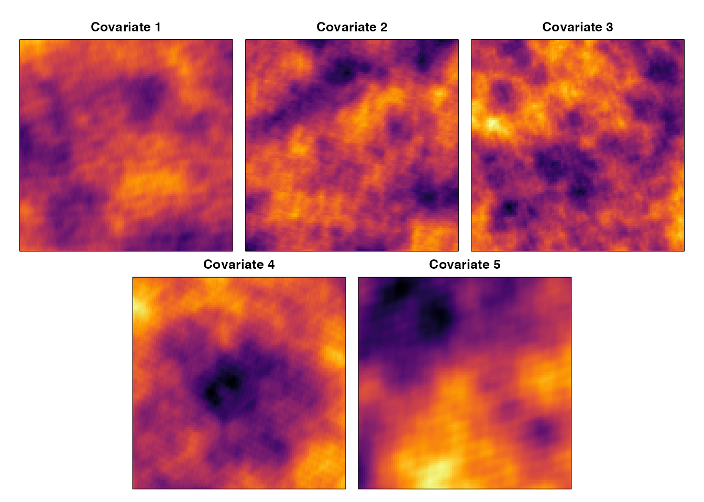
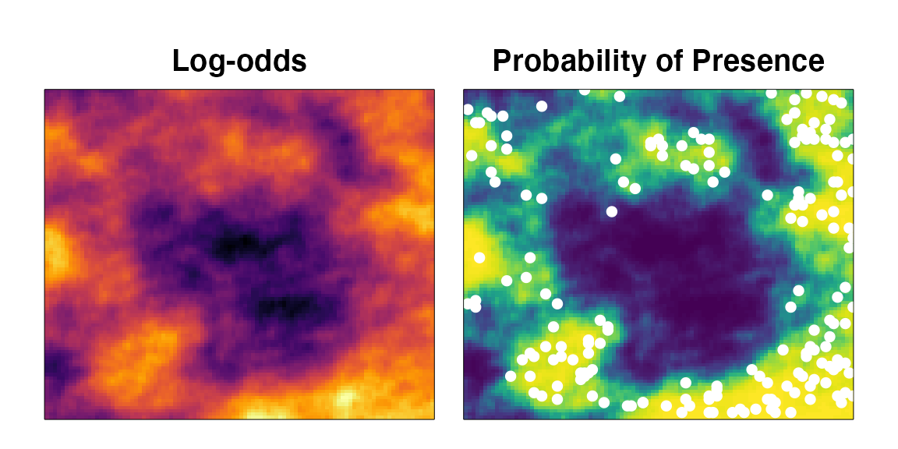
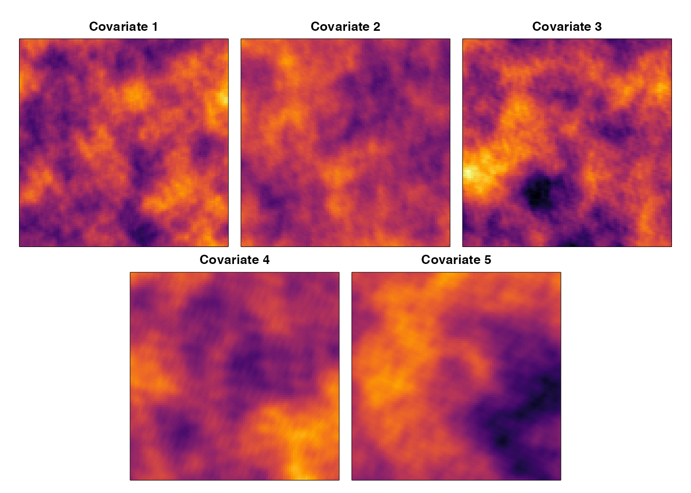

Running ERFs on a given dataset is easy. The function ens_random_forests() will take a given dataset in R data.frame format, amend it for modeling using erf_data_prep() and erf_formula_prep(), run each RF in the ensemble using rf_ens_fn(), and return a fitted ERF object. This object can then be passed to various output functions: erf_plotter() and … to visualize and summarize.
First, we must load the R library.
library(EnsembleRandomForests)
#> Loading required package: randomForest
#> randomForest 4.6-14
#> Type rfNews() to see new features/changes/bug fixes.
#> Loading required package: doParallel
#> Loading required package: foreach
#> Loading required package: iterators
#> Loading required package: parallelThe provided dataset is a list object that contains a data.frame of the sampled locations, the beta coefficients of the logistic model used to predict the probability of occurrence, and a raster brick object containing the gridded covariates, log-odds of occurrence, and probabilities of occurrence.
# We can also visualize the covariates
par(mar=c(0,0.5,2,0.5), oma=c(1,1,1,1))
layout(matrix(c(1,1,2,2,3,3,0,4,4,5,5,0),2,6,byrow=TRUE))
r <- range(cellStats(simData$grid[[1:5]],'range'))
for(i in 1:5){
image(simData$grid[[i]], col=inferno(100), zlim = r, xaxt='n', yaxt='n', xlab="", ylab="")
title(paste0('Covariate ', i))
}
We can also see the beta coefficients that produced the probability of presence using the model below: \[\begin{equation} log\left[\frac{\hat{P}_{obs=1}}{1-\hat{P}_{obs=1}}\right] = \alpha + \beta_1X_1 + ... +\beta_nX_n \end{equation}\]
print(round(simData$betas,3))
#> [1] -8.683 -2.642 -2.400 7.535 2.148
# We can visualize the log-odds and the probability of presence
par(mar=c(0,0.5,2,0.5), oma=c(1,1,1,1), mfrow=c(1,2))
image(simData$grid[[6]], col=inferno(100), xaxt='n', yaxt='n', xlab="", ylab="")
title("Log-odds")
image(simData$grid[[7]], col=viridis(100), xaxt='n', yaxt='n', xlab="", ylab="")
with(simData$samples[simData$samples$obs==1,],
points(x,y,pch=16,col='white'))
title("Probability of Presence")
Just run data_sim() and a new dataset with the default parameters will be generated. The examples in data_sim() provide a few code snippets to quickly visualize the simulated dataset.
set.seed(888)
newdata <- data_sim()
#> New output format of RFsimulate: S4 object of class 'RFsp';
#> for a bare, but faster array format use 'RFoptions(spConform=FALSE)'.
# We can view the resulting sampled locations
round(head(newdata$samples,4),3)
#> x y cov1 cov2 cov3 cov4 cov5 prob.raw prob pred obs
#> 1 63 58 0.216 -0.170 -0.194 -0.276 0.177 2.758 0.940 1 0
#> 2 48 49 -0.003 -0.041 -0.187 -0.231 -0.061 1.207 0.770 1 0
#> 3 91 59 0.259 -0.083 0.014 -0.078 -0.306 3.071 0.956 1 0
#> 4 75 27 0.335 -0.101 0.024 0.419 -0.484 2.854 0.946 1 0
# We can also view how many of each observation class we made
knitr::kable(table(newdata$samples$obs), col.names=c('Obs','Freq'))| Obs | Freq |
|---|---|
| 0 | 9834 |
| 1 | 166 |
# We can also visualize the covariates
par(mar=c(0,0.5,2,0.5), oma=c(1,1,1,1))
layout(matrix(c(1,1,2,2,3,3,0,4,4,5,5,0),2,6,byrow=TRUE))
r <- range(cellStats(newdata$grid[[1:5]],'range'))
for(i in 1:5){
image(newdata$grid[[i]], col=inferno(100), zlim = r, xaxt='n', yaxt='n', xlab="", ylab="")
title(paste0('Covariate ', i))
}
We can check model performance using the rocr_ens function. This calculates a battery of performance metrics based on the Receiver Operator Characteristic curve from the ROCR package. This function works on any set of predictions (ranging from (0,1)) and any set of observations (as a factor). We can test this on our simulated data.
# the rocr_ens function takes the predictions (or true probability in this case)
# as the first argument. The true observations as a factor class are the
# second argument.
roc <- with(simData$samples,rocr_ens(prob, factor(obs,levels=c(0,1))))
# We can visualize the resulting Receiver Operator Characteristic curve
# and add some of the threshold-free performance metrics (AUC, TSS, RMSE)
par(mar=c(4,4,1,1))
plot(roc$fpr@y.values[[1]], roc$tpr@y.values[[1]],
xlab = "False Positive Rate (1-Specificity)",
ylab = "True Positive Rate (Sensitivity)",
type = 'l', lwd=3, las=1)
text(0.6, 0.2, paste0('AUC = ', round(roc$auc,2)), cex=1.2, adj=c(0,0.5))
text(0.6, 0.125, paste0('TSS = ', round(roc$tss,2)), cex=1.2, adj=c(0,0.5))
text(0.6, 0.0525, paste0('RMSE = ', round(roc$rmse,2)), cex=1.2, adj=c(0,0.5))We will use our example dataset simData to run the ERF model on. Internally, ens_random_forests uses the functions erf_data_prep and erf_formula_prep to convert the data.frame of observations, the dependent variable of interest, and the covariates of interest into the correct format for the ERF model. We will see what these functions do first.
erf_data <- erf_data_prep(df = simData$samples,
var = "obs", #dependent variable
covariates = grep('cov',colnames(simData$samples), value=T),
header = c('prob.raw','prob'), #add'n columsn to include
duplicate = TRUE #flag for duplicate multiple presences
)
head(erf_data,4)
#> obs prob.raw prob cov1 cov2 cov3 cov4
#> 1 0 -0.2525018 0.4372078 -0.0715800 -0.27811766 0.5741324 0.01366734
#> 2 0 2.7156166 0.9379419 -0.1202814 0.26103341 -0.2298234 0.14750795
#> 3 0 0.5609232 0.6366661 0.1242205 0.09052045 -0.3070963 0.14493653
#> 4 0 0.2723824 0.5676777 -0.1248126 -0.29583389 0.6282519 0.06067430
#> cov5 random
#> 1 -0.1553770 1.8355346
#> 2 0.3248217 0.8144604
#> 3 0.0230301 2.0175587
#> 4 -0.2524068 -0.5237513As we can see above, the main purpose of erf_data_prep is to reorganize the data.frame so that the variable of interest is in the first column. Additionally, a random variable is included to provide a cutoff for variable importance downstream. The header argument allows you to tack on additional columns that you want to include in the model prediction data.frame. This is a useful way to add a column of unique IDs for matching predictions and observations should they get scrambled. It is unwise to include all columns in the header argument; tacking any extraneous columns to the ERF output is less wasteful of computational resources. The most impactful argument in erf_data_prep is the duplicate argument. This logical flag, when TRUE, copies the covariates for any row that has more than one presence in it. For example, say we have a fishery set a longline with each set equaling an observation (or row) in our data.frame. We are likely to expect that on the 1000’s of hooks on this longline that we could catch more than two of the species of interest. The duplicate argument handles this instance by copying the multiple presences on an observation. This effectively upweights covariate space where the species occurs multiple times. Alternatively, setting duplicate to FALSE can allow a user to model the probability of observing at least one of the dependent variable of interest. Note, this is different than the probability of presence when the observation unit can generate multiple presences per unit effort. Back in our longline example, if we used each individual hook as an observation (or row) then we could expect to only have one presence per hook and setting duplicate to TRUE or FALSE would have no impact on our resulting ERF data.frame.
Next, let’s see what erf_formula_prep does.
erf_form <- erf_formula_prep(var = 'obs',
covariates = grep('cov',colnames(simData$samples), value=T)
)
print(erf_form)
#> obs ~ cov1 + cov2 + cov3 + cov4 + cov5 + random
#> <environment: 0x7fd870085a20>This function is incredibly simple and mostly called internally to ens_random_forests. It simple sets the dependent variable and the covariates up for use in the resulting randomForests call.
The main wrapper function users should be interacting with is ens_random_forests. Internally, this function firsts prepares the data using erf_data_prep, creates a formula using erf_formula_prep, and then calls rf_ens_fn. This last function is the workhorse that implements each Random Forests in the ensemble. It also implements two bagging steps. The first bagging step divides the dataset into a training and test set (90:10% is default). The proportion of zeroes and ones in the presence observations is retained in this bagging step. The next bagging step implements downsampling. This balances the proportions of zeroes and ones provided to each decision tree in a given Random Forests. For example, let’s look at the frequency and proportion of zeroes and ones in our simulated dataset simData.
| Obs | Freq |
|---|---|
| 0 | 9819 |
| 1 | 181 |
| Obs | Prop. |
|---|---|
| 0 | 0.9819 |
| 1 | 0.0181 |
As we can see our zeroes and ones are unbalanced, we have far more zeroes than ones. In the first bagging step the proportion of zeroes and ones is retained in creating the training/test sets. Then prior to calling the next bagging step, we determine the maximum number of samples in each bag passed to each decision tree in a given Random Forests in the ensemble. We do this with max_splitter.
(max_split <- max_splitter(erf_data))
#> [1] 143Now that we have prepared our data, formula, and maximum split we can run a single Random Forest. This will be done internally in ens_random_forests multiple times to create the ensemble of Random Forests. Here, a single RF is run but with the double bagging procedure as discussed above. The resulting list has components mod, preds, roc_train, and roc_test. Internally, in ens_random_forests these will be used to calculate the ensemble predictions and performance. On our single RF this will return the randomForest class model, a data.frame of the predictions and observations, the ROC measured performance for the training set, and for the test set. The test set metrics are of more interest than the training set. It is still useful to check that \(AUC_{training} > AUC_{test}\) as by random chance the test AUC can be greater even though the overall RF fit poorly. The test was not seen by the RF model so it is a better measure of how the model fits the data. In ERF, we do not typically concern ourselves with out-of-bag performance calculated internally in the randomForest call.
rf_ex <- rf_ens_fn(erf_data, erf_form, max_split, ntree=50)
head(rf_ex$preds)
#> P.0 P.1 PRES type
#> 1 0.74 0.26 0 train
#> 2 0.18 0.82 0 train
#> 3 0.70 0.30 0 train
#> 4 0.72 0.28 0 train
#> 5 0.36 0.64 0 train
#> 6 1.00 0.00 0 train
rf_ex$roc_train$auc #training AUC
#> [1] 0.9726832
rf_ex$roc_test$auc #test AUC
#> [1] 0.8322167
(rf_ex$roc_train$auc > rf_ex$roc_test$auc)
#> [1] TRUENow that we have covered the background, let’s run an ERF. This is simple using ens_random_forests.
ens_rf_ex <- ens_random_forests(df=simData$samples, var="obs", covariates=grep("cov",colnames(simData$samples),value=T), save=FALSE)
#> rounding n.forests to the nearest one
head(ens_rf_ex$data) # view the dataset used in the model
#> obs cov1 cov2 cov3 cov4 cov5 random
#> 1 0 -0.07158000 -0.27811766 0.5741324 0.01366734 -0.15537696 -0.05943421
#> 2 0 -0.12028137 0.26103341 -0.2298234 0.14750795 0.32482174 -1.10237778
#> 3 0 0.12422049 0.09052045 -0.3070963 0.14493653 0.02303010 0.15782997
#> 4 0 -0.12481261 -0.29583389 0.6282519 0.06067430 -0.25240678 -1.24557614
#> 5 0 0.01361460 -0.04989738 0.1600218 0.42189437 0.13166581 -0.63223943
#> 6 0 0.01842766 0.18300638 -0.3421439 -0.33128857 0.07998399 -0.84230393
head(ens_rf_ex$ens.pred) #view the model predictions
#> P.0 P.1 PRES resid
#> 1 0.7253 0.2747 0 -0.2747
#> 2 0.3866 0.6134 0 -0.6134
#> 3 0.5867 0.4133 0 -0.4133
#> 4 0.6462 0.3538 0 -0.3538
#> 5 0.3734 0.6266 0 -0.6266
#> 6 0.9895 0.0105 0 -0.0105
ens_rf_ex$mu.te.perf #view the test threshold-free performance metrics
#> teAUC teRMSE teTSS
#> 0.7899828 0.3937035 0.5764551
unlist(ens_rf_ex$ens.perf[c('auc','rmse','tss')]) #view the threshold-free ensemble performance metrics
#> auc rmse tss
#> 0.9790959 0.3789035 0.8522270As we can see, the ensemble performs better than the mean test predictions. This is advantage of ERF over other RF modifications for extreme class imbalance. Siders et al. 2020 discusses the various performance of these other modifications if you are curious.